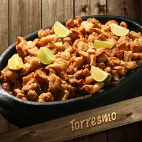

Torresmo.

INGREDIENTES.
- 02Kg de toucinho.
- 02 Colheres (sopa) de banha.
- Sal á gosto.
PORÇÕES.
Serve 07 Pessoas.
TEMPO DE PREPARO.
30 Minutos.
PASSO A PASSO.
- Primeiro, retire toda a pele do toucinho.
- Em seguida, corte em pequenos cubose polvilhe com um pouco de sal refinado.Reserve.
- Coloque, em uma panela,a banha e leve ao fogo brando, cuide para que não fique muito quente.
- Acrescente o toucinho cortado e frite lentamente.
- Quando corar, tire com a escumadeira e deixe escorrer em papel obsorvente.
- Servir ainda quente.
Página Inicial.